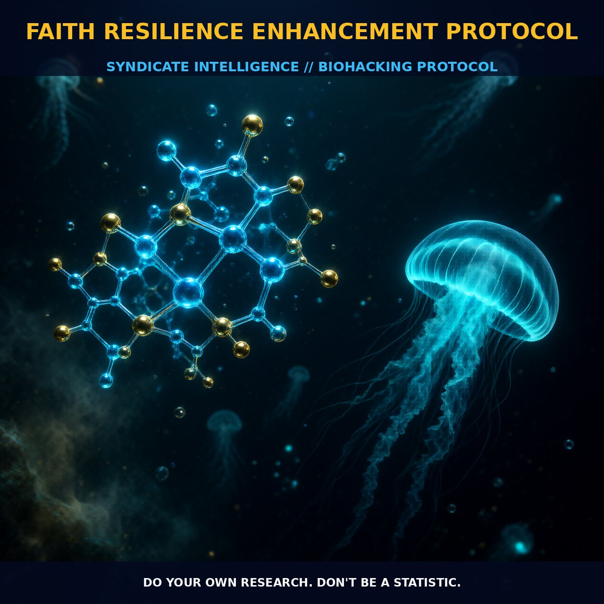

Enhancing Resilience with Faith and Fasting

1. The Mechanism
Faith resilience enhancement protocols are designed to leverage the psychological and physiological benefits of faith and community engagement to bolster resilience in the face of adversity. These protocols integrate practices such as fasting, community support, and spiritual practices to enhance both mental and physical health.
Fasting, in particular, is a powerful modulator of multiple physiological systems, including metabolic, cardiovascular, immune, neurocognitive, and psychospiritual pathways. It serves as a non-pharmacological strategy to adjust cellular metabolism, enhance autophagy, and modulate inflammation. This multifaceted approach ensures that the body and mind are better equipped to handle stress and adversity.
The mechanics of faith resilience are grounded in the interplay between faith-based coping strategies and physiological responses. Positive religious reappraisal and active spiritual coping are associated with higher self-reported pain endurance and improved pain resilience. These coping mechanisms help individuals reframe stressful or painful situations through a lens of faith, reducing the perceived emotional burden. Additionally, the communal aspect of faith practice, such as attending religious services and participating in community activities, fosters a sense of belonging and support, further enhancing psychological resilience.
Biological leverage is evident in the modulation of various physiological pathways. Fasting activates the AMPK pathway, leading to an increase in autophagy—a cellular process crucial for maintaining cellular health and function. This process enhances the body's ability to cope with stress. Fasting also reduces insulin levels and increases the availability of ketone bodies, alternative fuel sources for the brain, potentially enhancing cognitive function and neuroprotection.
Neurocognitive benefits are also significant. Practices such as meditation and prayer can modulate NMDA receptor activity and enhance cAMP signaling pathways, critical for synaptic plasticity and cognitive flexibility. These practices can also reduce the production of cortisol, a stress hormone that negatively impacts cognitive function over time. The combination of these neurobiological effects contributes to improved cognitive resilience and better mental health outcomes.
Psychospiritual effects of faith resilience protocols can be observed in the modulation of stress response pathways. Engaging in faith practices can activate the parasympathetic nervous system, helping to lower heart rate and blood pressure, thereby reducing overall stress levels. This is particularly beneficial during periods of high stress or adversity.
2. Biological Leverage
Fasting, for instance, activates the AMPK pathway, leading to an increase in autophagy, a cellular process that helps clear damaged organelles and proteins. This process is crucial for maintaining cellular health and function, thereby enhancing the body's ability to cope with stress. Fasting also reduces insulin levels and increases the availability of ketone bodies, alternative fuel sources for the brain, potentially enhancing cognitive function and neuroprotection.
Neurocognitive benefits are also significant. Practices such as meditation and prayer can modulate the NMDA receptor activity and enhance cAMP signaling pathways, critical for synaptic plasticity and cognitive flexibility. These practices can also reduce the production of cortisol, a stress hormone that negatively impacts cognitive function over time. The combination of these neurobiological effects contributes to improved cognitive resilience and better mental health outcomes.
Moreover, the psychospiritual effects of faith resilience protocols can be observed in the modulation of stress response pathways. Engaging in faith practices can activate the parasympathetic nervous system, helping to lower heart rate and blood pressure, thereby reducing overall stress levels. This can be particularly beneficial during periods of high stress or adversity.
3. Tactical Implementation
Implementing a faith resilience enhancement protocol requires a holistic approach that integrates both physiological and psychological strategies. Fasting can be incorporated into daily or weekly routines, with intermittent or time-restricted fasting being particularly effective. For instance, a 16-hour fasting window with an 8-hour eating window can help individuals reap the metabolic and cognitive benefits of fasting. This approach can be adjusted based on individual tolerance and preferences, but it should be maintained consistently to achieve optimal results.
Community support is another critical component of faith resilience. Participating in faith-based communities, whether through regular attendance at religious services or virtual meetings, can provide a sense of belonging and support that is essential for resilience. Engaging in communal activities, such as volunteer work or social gatherings, can further strengthen these social connections and enhance psychological well-being.
Spiritual practices, such as meditation and prayer, can be incorporated into daily routines to enhance cognitive and emotional resilience. These practices can be tailored to individual preferences and can include various techniques such as mindfulness meditation, prayer, or chanting. The key is to establish a consistent and sustainable routine that can be maintained over time.
Incorporating these elements into a comprehensive faith resilience protocol can help individuals enhance their resilience and better cope with the challenges of everyday life.
Prostar Life Hack
Establish a consistent fasting routine with intermittent fasting (16:8 or 18:6) and incorporate daily spiritual practices such as meditation or prayer to enhance both physical and mental resilience.
[ AUTHOR: LEAD TECHNICAL RESEARCHER ]